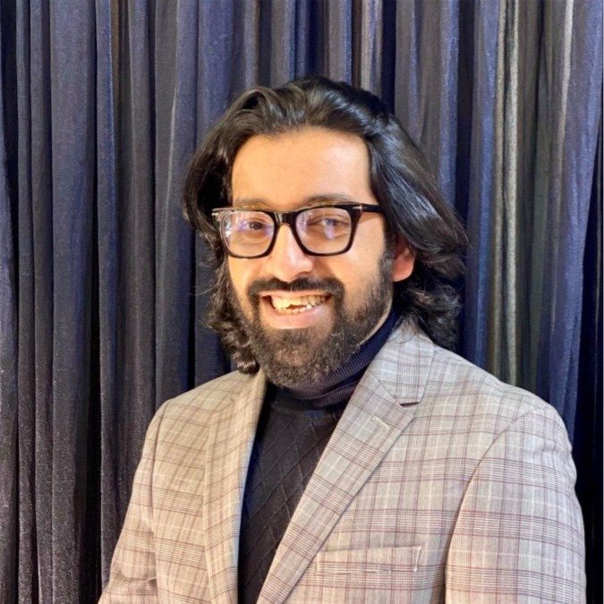

Murshidul Hasan

Summary
Experienced digital marketing strategist with over 14 years of proven success in brand building,
media buying, and performance marketing across diverse industries including telecom, FMCG, banking,
and e-commerce. Currently serving as Assistant Director at GroupM Bangladesh
, leading campaigns for top-tier clients like Banglalink,
Marico, and ACI.
Skilled in Google Ads, Meta Ads, SEO, programmatic media, and influencer marketing. Holds an MBA in Marketing from
IBA, University of Dhaka,
and a BBA in Finance & Economics from North South University. Now pivoting towards
data-driven roles with a growing focus on business analytics and AI. Known for delivering impactful, insight-led strategies
that drive measurable growth.
Education
Work experience
-
Assistant Director – GroupM Limited (Aug 2024 – Present)
Led digital media strategy and execution for top brands like Banglalink, ACI, and Marico. Oversaw large-scale media budgets, built strategic partnerships with global platforms (Meta, Google, TikTok), and pioneered award-winning campaigns. Spearheaded innovation, team leadership, and performance management across client campaigns.
-
Head of Marketing – FirstTrip (Apr 2024 – Aug 2024)
Crafted brand and go-to-market strategies, partnered with major banks for payment integration, and led cross-functional collaboration for app development, UI/UX enhancement, and pre-launch activities.
-
Head of Live Commerce – Alibaba Group (Daraz) (Aug 2022 – Feb 2024)
Scaled Daraz Live to become the #1 live commerce platform in Bangladesh. Managed 750+ influencers, optimized campaign performance (11.11, 12.12), introduced innovative monetization models, and drove operational and strategic alignment with key stakeholders.
-
Head of Digital Marketing – ShareTrip (Sep 2021 – Jul 2022)
Drove a 3x GMV growth via performance marketing, SEO, SEM, and social campaigns. Led paid media, lifecycle marketing, SEO (via SEMRush, Ahrefs), and cross-functional collaboration. Boosted app traffic by 150% and grew digital footprint significantly.
-
Brand Manager & Digital Marketing Lead – City Bank (Apr 2015 – Aug 2021)
Launched City Alo and City Islamic brands. Oversaw American Express digital marketing. Led UX/UI revamp, content strategy, and digital transformation. Optimized media spend, boosted card acquisition, and strengthened cross-functional campaign alignment.
-
Executive, Brand Communications – Dhaka Tribune (Jan 2013 – Apr 2015)
Built strategic partnerships, launched the “Glad to be BanGLADeshi” campaign, and coordinated PR activities with BAT, Robi, Goethe-Institut, and others. Delivered high-impact brand campaigns and event sponsorships.
-
Executive, Marketing – Trust Alliance Technology Ltd. (Oct 2011 – Jan 2013)
Led real estate marketing strategy, developed stakeholder relationships, and supported sales and promotional initiatives through market research and lead generation.
Skills
- Digital Marketing
- Marketing Strategy
- Performance Marketing
- Media Buying
- Brand Management
- Influencer Marketing
- Live Commerce Marketing
- Advertising
- Public Relations
- Market Research
- Google Ads
- Meta Ads (Facebook & Instagram)
- Search Engine Marketing (SEM)
- Search Engine Optimization (SEO)
- Display Advertising
- Video Marketing
- Social Media Marketing
- Email Marketing
- E-Commerce Strategy
- Google Analytics
- Web Analytics
- Firebase Analytics
- Marketing Metrics
- SQL for Data Analysis
- Website Development (HTML, CSS)
- Python Programming
- TensorFlow & Machine Learning
- Agile Methodologies
- Scrum
- Stakeholder Management
- Team Leadership
Certifications
- Google Digital Marketing & E-commerce Certificate – Coursera
- Digital Marketing Specialization – Coursera
- Meta Social Media Marketing Specialization – Coursera
- Growth Hacking & Performance Marketing – Udemy
- Brand Identity and Strategy – IE Business School (Coursera)
- Google Ads – Measurement Certification – Google Digital Academy
- Google Ads – Creative Certification – Google Digital Academy
- Google AI-Powered Performance Ads Certification – Google Digital Academy
- The Data Science Course: Complete Data Science Bootcamp 2024 – Udemy
- The Ultimate MySQL Bootcamp: Go from SQL Beginner to Expert – Udemy
- Responsive Web Design – freeCodeCamp
- WordPress for Beginners – Udemy
- Agile Fundamentals: Including Scrum & Kanban – Udemy